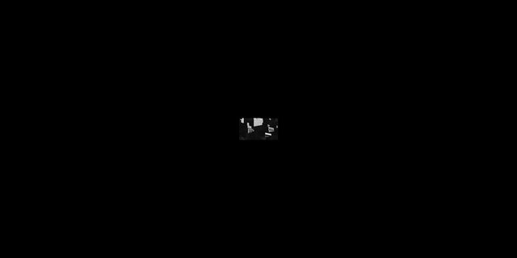
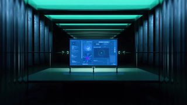

点封面在页面里播放（Vimeo / YouTube / X 需要代理；Vimeo 若没自动开始，再点一下播放键）。觉得好就点「喜欢」，有想法就写在下面的框里保存，我每天出日报前会读，存进偏好和审美库；会多找同类，但每天仍保持类型分散。
目录
- 01Death By Lightning — Opening Titles
- 02stickers + gem refraction（jhey.dev）
- 03make the app feel faster（ease-in vs ease-out）
- 04RADAR kinetic type（dot-matrix）
- 05bitmap studio reel（kinetic type + UI）
- 06Playgrounds In Motion — Opening Titles
- 07How does Tap to Pay Work?
- 08But what is cross-entropy?
- 09The Sun Is Weirder Than You Think
- 10:has() browser process sheets
- －看完剔除（8 条）
- 拆细拆：Death By Lightning 机械走马灯片头
01片头片尾MG3D质感
Death By Lightning — Opening Titles
KING+COUNTRY · 2026 【看过视频】（完整看过）
 motionographer.com
motionographer.com全片约 49 秒已下载并用看片工具完整看过；今天的细拆
主色暗底 + 青绿/血红分色；字体未识别
好在哪约 49 秒 Netflix 剧集片头：自造机械走马灯——国会穹顶、钢丝独轮、青铜小人、蒸汽火车。左血红/右青绿双色轮廓光；职衔小红字+宽距白大写人名叠在暗角。全程几乎踩鼓点硬切。字体未识别（几何无衬线，接近 Gotham / Montserrat）
可借暗调片头：别一次亮全景，用窄景深+红青双侧光只露齿轮一角；人名用「小职衔色字+大白字」两层；转场跟鼓点硬切，少用淡入
02代码动画UI动效3D质感
stickers + gem refraction（jhey.dev）
jhey（@jh3yy） · X 2026-11-06 【看过画面（抽帧）】
 X
X25 秒已下载，抽帧看过
界面字未识别；签名手写风
好在哪约 25 秒：黑底网格站里贴纸熊可拖，钻石宝石用红滑条改折射；侧栏 Sprite Masks / Gem。克制，不堆粒子
可借做「可玩组件墙」：贴纸当独立层带亮边，宝石单独一条 slider 只改折射强度，别和菜单变形抢戏
03UI动效代码动画
make the app feel faster（ease-in vs ease-out）
Emil Kowalski（@emilkowalski） · X 2026-11-06 【看过画面（抽帧）】
 X
X25 秒已下载，抽帧看过
字体未识别（接近 Inter / SF Mono 标签）
好在哪约 25 秒白底对照：同一 Options 按钮，ease-in 显钝、ease-out 落地；再画曲线并给出 cubic-bezier(0.23, 1, 0.32, 1)
可借弹层/按钮出场默认用强 ease-out（快起慢停）；别用 ease-in 做「打开」，会像卡住
04字体版式代码动画
RADAR kinetic type（dot-matrix）
Jake（@designbyjake_） · X 2026-11-05 【看过画面（抽帧）】
5 秒已下载，抽帧看过
点阵字未识别（自定义 bitmap）
好在哪约 5 秒竖屏：白圆点在黑底拼成字，竖直拉伸像融化/扫描；高对比、无杂物
可借竖屏片头一拍：字用点阵网格，出场只做一列「往下滴」的错位，别加光斑
05字体版式UI动效MG
bitmap studio reel（kinetic type + UI）
Bitmap Studio（@bitmapstudio） · X 2026-11-05 【看过画面（抽帧）】
6 秒已下载，抽帧看过
字未识别（几何无衬线）
好在哪约 6 秒 2×2 商业卡：灵动岛波形通话、杠杆表盘、客户 logo 墙、kinetic「gets stuck / risk」。干净商业感
可借作品集封面别整页 reel：四宫格各放一个「一句卖点+一个动效」，循环切比长预告更耐看
06片头片尾字体版式MG
Playgrounds In Motion — Opening Titles
Nexus Studios · 2026 【看过画面（抽帧）】

motionographer.com约 101 秒已下载，抽帧看过
宽画幅；字体未识别（粗衬线字标）
好在哪约 101 秒（下了全片）高对比黑白：城市窗格剪影、抖动地球+导航细线、岩石阵列、粗衬线字标。像印刷/位图片头
可借纪录片片头可试「只黑白+一种纹理」（窗格/沙石），字用一支粗衬线砸进去，别上渐变
07知识讲解3D质感
How does Tap to Pay Work?
Branch Education · 2026 【看过画面（抽帧）】
全片很长，已截前 120 秒下载并抽帧
字未识别；Branch 角标
好在哪前 120 秒：咖啡馆实景叠 AR——读卡器壳体炸开、银行卡 NFC 线圈分层、协议 HUD。爆炸拆解干净，贴 11-06 评论「爆炸拆解可以参考」
可借讲硬件：先定一张实景底板，零件沿一条斜轴依次弹出；线圈单独一层金属线，别和塑料壳同时动
08知识讲解代码动画数据可视化
But what is cross-entropy?
3Blue1Brown · 2026 【看过画面（抽帧）】
已截前 120 秒下载并抽帧
标题字接近 Computer Modern / 未识别无衬线
好在哪前 120 秒黑底：GZIP 解压箭头、Document A/B 色块条、语言谱系透视树。组件清晰，好偷
可借讲「压缩/损失」：先用色块条当文档，再抽三截对比；谱系树用透视往消失点收，别平铺列表
09知识讲解数据可视化
The Sun Is Weirder Than You Think
Cleo Abram · 2026 【看过画面（抽帧）】
已截前 120 秒下载并抽帧
字体未识别（圆角无衬线）
好在哪前 120 秒：太阳剖面叠光子折线标注「170,000 YEARS」、极简「*if true」字卡、行星轨道顶视。延续已赞地图箭头类讲解
可借竖/横屏科普：大数别口播硬念，把数字弯在图形边缘当路径字幕；中间只留一条折线当「过程」
10知识讲解代码动画
:has() browser process sheets
jhey（@jh3yy） · X 2026-11-06 【看过画面（抽帧）】
17 秒已下载，抽帧看过
蓝图字未识别（等宽+无衬线）
好在哪约 17 秒蓝图风：把 :has() 变更拆成 ANCHOR / CONDITION / TARGET，DOM walk + restyle 图例可步进。偏教学，信息图干净
可借讲浏览器/算法：用一张「工程图纸」底（网格+青线），步骤用 Back/Play/Step，比纯口播幻灯更清晰
看完剔除（8 条）
3Blue1Brown · 口播 talking head 为主，动效弱

Anaissa Ruiz Tejada / Cristian Sandoval · 粒子/纤维光效偏炫技
今日细拆 · 第 1 条
49 秒，用「只转不演」的走马灯做暗调剧集片头 【看过视频】（完整看过），时间点是大约值
KING+COUNTRY 为 Netflix《Death By Lightning》做的片头。周六字体/片头档。核心不是复杂骨骼动画，而是一座过量工程的机械走马灯：齿轮、活塞、钢丝、青铜小人挂在同心圆上慢转。左血红、右青绿两路轮廓光，景深压得很浅——机器永远看不全。职衔字极克制，叠在画面角上不进 3D。
画面长什么样
- 底几乎全黑；左血红 / 右青绿双色轮廓光，中间留给金属高光；几乎没环境光
- 主体是微缩机械世界：国会穹顶剪影、钢丝独轮、青铜小人阵列、蒸汽火车、俯视同心涡轮
- 景深极浅：前景虚成色块，只锐一截齿轮或一个人形——刻意「找细节」
- 字体未识别：职衔用小号有色无衬线（红或青），人名用更宽距的白大写；文字是 2D 叠层，不受 3D 虚化影响
结构与节奏（完整看片记下的大约秒数）
- 0–4 秒：雾里国会穹顶 + 「A NETFLIX SERIES」居中淡入；约 3 秒踩重拍硬切到俯视，穹顶底座像齿轮开始转
- 5–15 秒：一串鼓点硬切——转动摇柄、骑独轮、上下楼梯的铸铁小人；镜头线性推拉，和场景自转形成相对运动
- 15–28 秒：印刷机出报、拳击小人、排队机械人偶；浅景深做到极致，像微距实拍
- 29–40 秒：蒸汽船 + 环形轨道火车；约 37 秒左对齐多行职衔卡，和右侧持喇叭人偶对位
- 41–44 秒：对称全景——礼帽人偶背对镜头望国会大厦；「DEATH BY」「LIGHTNING」分列两侧淡入，红青光对称到顶
- 45–49 秒：匹配剪辑切到正上方俯视，整座装置像曼陀罗逆时针转；导演卡淡入后渐黑
转场怎么接
- 中间几乎全是踩音乐节拍的硬切，不用花字擦除、也不靠复杂运镜转场
- 0:45 那一下是匹配剪辑：同一机械装置从平视瞬切顶视
- 同一青绿轮廓光贯串多个微缩道具，当视觉主线；字卡固定角落，不抢中心
Remotion / Three.js 里怎么偷味道
- 走马灯：把齿轮和静态人偶挂到几个同心 Group 上，useFrame 里只加 rotation.y——满屏复杂感来自结构，不是骨骼
- 双色光：关环境光，左右各一盏 Directional/Spot（血红+青绿）；暗影能盖住低模瑕疵
- 微缩感：EffectComposer + 极浅 BokehPass；焦外机械迅速糊掉
- 金属：MeshStandard/Physical，metalness 近 1、roughness 中偏高，必须配高对比 HDRI 才有边缘反光
- 字别进 Three.js TextGeometry：Remotion 里用绝对定位 HTML 叠在 Canvas 上，CSS letter-spacing 拉开
- 音频硬切：按 BPM/鼓点换 Sequence 和相机坐标，比淡入淡出更有打击感
放到自己片里怎么用
竖屏工具实测片头：黑底放一个「拆开的零件」微距（照片也行），两侧青/红光，职衔式小字写本期主题，鼓点硬切进界面。
横屏口播开场：先给 2 秒只露齿轮齿的虚焦，再切你的 UI——比直接淡入 Logo 更有剧集感。想偷 Bass X Machina 那种炫技片头感，也可以从「只转同心圆 + 双色轮廓光」这套低成本路线起步。
看文章 ↗Vimeo ↗